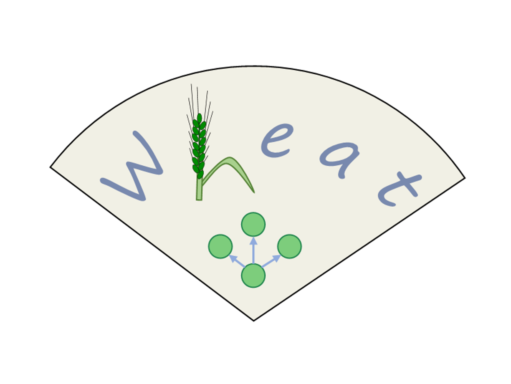
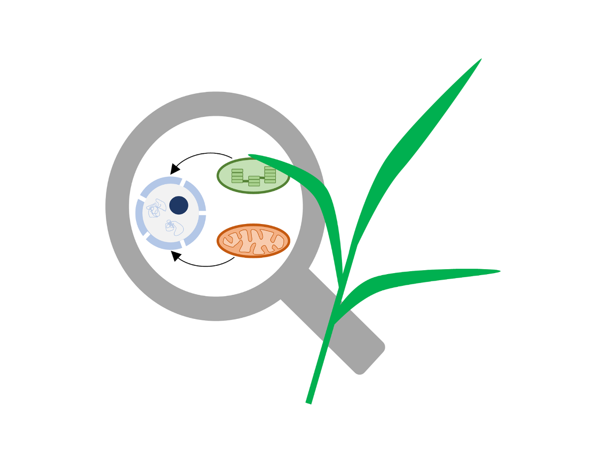
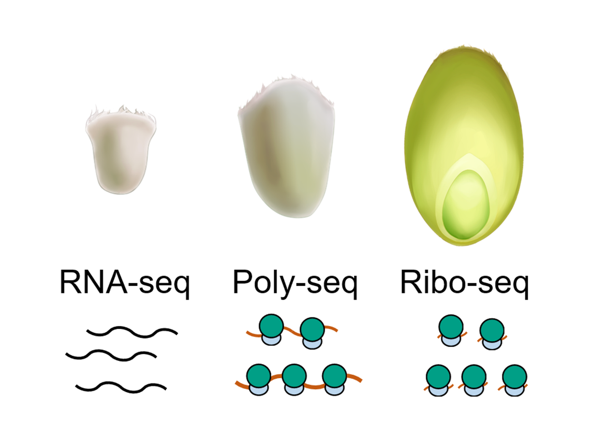

Triticeae-GeneTribe (TGT)
A comparative genomic and homology database for Triticeae
Explore resource ↗Resources for comparative genomics, gene discovery and multi-omics analysis.
A comparative genomic and homology database for Triticeae
Explore resource ↗
A wheat integrative regulatory network platform for functional gene discovery
Explore resource ↗
A comprehensive pan-genome database for comparative and functional genomics of Asian rice
Explore resource ↗
A browser for analyzing the translatomic data of developing wheat grains
Explore resource ↗A tool for identifying the evolutionary trajectories of nuclear organellar genes
Explore resource ↗